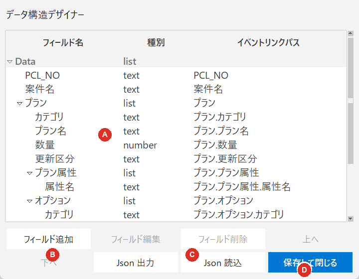

共通データで使用する項目の設計図を作ります。値は「共通データ管理」で入力します。

| ボタン | 操作内容 | 注意 |
|---|---|---|
| フィールド追加 | 選択位置に新しい項目を追加します。 | object/list を選ぶとその配下に追加されます。 |
| フィールド編集 | 項目名や型を変更します。 | 「Data」は編集できません。 |
| フィールド削除 | 選択項目と配下の項目を削除します。 | イベントで使用していないか確認します。 |
| 上へ／下へ | 同じ階層内で項目の順番を変更します。 | 異なる階層へは移動できません。 |
| Json 出力 | 現在のデータ構造をバックアップします。 | 大きな変更の前に実行します。 |
| Json 読込 | Json の構造で現在の構造を置き換えます。 | 一致しない既存項目が見えなくなる場合があります。 |
| 保存して閉じる | 構造を保存し、既存データを新しい構造に合わせます。 | 追加・編集後に必ず押します。 |
| text | 氏名、コード、URL などの文字。 |
| number | 数量、金額などの数値。 |
| boolean | はい／いいえ、ON／OFF。 |
| object | 住所など、複数項目をまとめるグループ。 |
| list | 商品明細など、0件以上繰り返す項目。 |